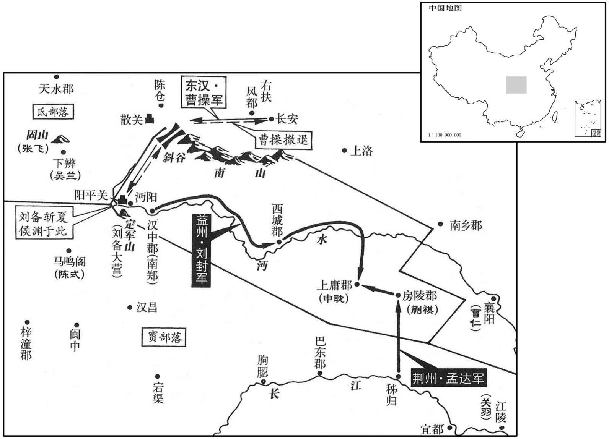

公元218年资治通鉴：本年记事、原文与白话对照
按原书编年位置阅读；追叙和史论不等于本年发生的事件。白话采用所据译本，缺译不以生成译文补齐。
卷68 · 本年记事
公元218年 · 汉孝献皇帝建安二十三年
二十三年〔（戊戌、二一八）〕
上传原文的注释括号有异常，字符原样保留；无法可靠划分的段落默认全文显示。
本年事件索引（现代整理）

本年形势与背景参考图
春，正月，吉邈等率其党千余人，夜攻王必，烧其门，射必中肩，〔射，食亦翻。〕帐下督扶必奔南城。〔许昌之南城也。〕会天明，邈等众溃，必与颍川典农中郎将严匡共讨斩之。〔颍川典农中郎将屯田许下。〕
春季，正月，吉邈等人率党羽一千余人，在夜间攻击王必，烧毁王必住所的门，用箭射中他的肩部。帐下督扶着王必逃到许都南城。正好天明，吉邈和他的党羽溃散，王必和颖川典农中郎将严匡共同讨伐，斩杀吉邈等人。
三月，有星孛于东方。〔孛，蒲内翻。〕
三月，有异星出现在东方。
曹洪将击吴兰，张飞屯固山，声言欲断军后，〔断，丁管翻；下同。〕众议狐疑。骑都尉曹休曰：〔汉武帝置三都尉，骑都尉其一也。〕「贼实断道者，当伏兵潜行；今乃先张声势，此其不能，明矣。宜及其未集，促击兰，兰破，飞自走矣。」洪从之，进，击破兰，斩之。三月，张飞、马超走。〔情见势屈，宜其走也。〕休，魏王族子也。
曹洪将要攻击吴兰，而张飞驻军固山，声称要切断曹军的后路。曹洪和将领们商议，犹豫不决。骑都尉曹休说：“张飞等人若确实要切断我军后路，应该派军队隐蔽行军，而现在却先大造声势，而实际上做不到，这是很清楚的。我军应该敌人尚未集结，迅速攻击吴兰，吴兰被击败，张飞自然退走。”曹洪听从了这一建议，进军击败吴兰军，斩杀吴兰。三月，张飞、马超撤退。曹休是魏王曹操的同族子侄辈。
夏，四月，代郡、上谷乌桓无臣氐等反。先是，魏王操召代郡太守裴潜为丞相理曹掾，〔先，悉荐翻。掾，于绢翻。〕操美潜治代功，〔治，直之翻。〕潜曰：「潜于百姓虽宽，于诸胡为峻。今继者必以潜为治过严而事加宽惠。〔治，直吏翻。〕彼素骄恣，过宽必弛；既弛，〔【章：甲十一行本「弛」下有「又」字；乙十一行本同；张校同。】〕将摄之以法，〔摄，持也，整也。〕此怨叛所由生也。以势料之，代必复叛。」〔后魏陆侯治高车，与潜异世而同辙。复，扶又翻。〕于是操深悔还潜之速。后数十日，三单于反问果至。操以其子鄢陵侯彰行骁骑将军，〔鄢陵县，属颍川郡。骁骑将军，始于汉武帝，以命李广。陆德明曰：鄢，谒晚翻，又于建翻。汉书作「傿」。师古曰：音偃。〕使讨之，彰少善射御，膂力过人。〔少，诗照翻。〕操戒彰曰：「居家为父子，受事为君臣，动以王法从事，尔其戒之！」
夏季，四月，居住在代郡、上谷郡的乌桓族无臣氐等造反。先前，魏王曹操召回代郡太守裴潜，任命为丞相相理曹掾。曹操赞扬裴潜治理代郡的成就，裴潜说：“我对百姓虽然宽容，但对胡人却很严厉。今后我的继任者，必然认为我的沼理过严而采取宽厚的措施。那些胡人一向骄横，过度宽厚必然导致放纵，放纵以后再用法令限制，这将是引起他们生怨反叛的原因。根据情势预测，代郡的乌桓必定还要反叛。”于是曹操深悔召裴潜回来得太快了。几十天过后，乌桓三个单于反叛的消息果然传来了。曹操以儿子鄢陵侯曹彰代理骁将军，派去讨伐反叛的乌桓。曹彰从小擅长射箭骑马，力量过人。曹操告诫曹彰：“在家的时候，我们是父子；接受任务后，就变成了君臣， 一举一动都要按朝廷法令行事，你要小心！”
刘备屯阳平关，夏侯渊、张合、徐晃等与之相拒。备遣其将陈式等绝马鸣阁道，〔马鸣阁，在今利州昭化县。〕徐晃击破之。张合屯广石，广石，当在巴、汉之间。〕备攻之不能克，急书发益州兵。诸葛亮以问从事犍为杨洪，洪曰：「汉中，益州咽喉，〔犍，居言翻。咽，音烟。〕存亡之机会，若无汉中，则无蜀矣。此家门之祸也，发兵何疑。」时法正从备北行，亮于是表洪领蜀郡太守；众事皆办，遂使即真。〔遂使之代法正。〕
刘备驻军阳平关，曹军夏侯渊、张、徐晃等与他对峙。刘务派部下将领陈式等人去切断马鸣阁的道路，被徐晃打败。张驻守在广石，刘备攻打不下来，急发文书调集益州军队。诸葛亮问从事、犍为人杨洪应如何处理此事，杨洪说：“汉中是益州的咽喉，存亡的关键，如失去汉中，就没有蜀了，这是家门前的祸患，对发兵有什么疑问！”当时蜀郡太守法正跟随刘备到了北方，诸葛亮于是上表请求由杨洪代理蜀郡太守。杨洪将各项政务全都办理妥当，于是获得正式任命。
初，犍为太守李严辟洪为功曹，严未去犍为而洪已为蜀郡；洪举门下书佐何祗有才策，〔汉制：郡阁下及诸曹各有书佐，干主文书。灵帝光和二年樊毅复华下民租口算碑载其上尚书奏牍，前书年、月、朔日，夕农太守臣毅顿道死罪上尚书，后书臣毅诚惶诚恐、顿首顿首、死罪死罪上尚书，后系掾臣条，属臣淮，书佐臣谋。洪尚在蜀郡，而祗已为广汉太守。是以西土咸服诸葛亮能尽时人之器用也。
本段缺少可靠对应白话，原文完整保留；未使用生成译文。
秋，七月，魏王操自将击刘备；九月，至长安。
秋季，七月，魏王曹操亲自率兵进攻刘备。九月，到达长安。
曹彰击代郡乌桓，身自搏战，铠中数箭，〔铠，可亥翻。〕意气益厉；乘胜逐北，至桑干之北，〔桑干县，属代郡。宋白曰：今云州东至桑干督帐一百五十里。孟康曰：干，音干。〕大破之，斩首、获生以千数。时鲜卑大人轲比能〔轲比能本小种鲜卑，以勇健不贪，断法平端，众惟之为大人。〕将数万骑观望强弱，见彰力战，所向皆破，乃请服，北方悉平。
曹彰征讨代郡的乌桓时，亲自参加战斗，铠甲被射中数箭，却愈战愈勇，乘胜追击败兵，直至桑干河以北，大败乌桓，杀死、俘虏乌桓上千人。当时鲜卑族首领轲比能率骑兵数万人，观望曹彰和乌桓的强弱，见曹彰的军队作战勇敢，所向披靡，取得了胜利，便请求归服曹彰。北方全部平定。
南阳吏民苦繇役，〔繇，读曰傜。苦于供给曹仁之军也。〕冬，十月，宛守将侯音反。〔宛，于元翻。〕南阳太守东里衮〔郑子产居东里，支子以为氏。〕与功曹应余迸窜得出；音遣骑追之，飞矢交流，余以身蔽衮，被七创而死，〔被，皮义翻。创，初良翻。音骑执衮以归。时征南将军曹仁屯樊以镇荆州，魏王操命仁还讨音。功曹宗子卿说音曰：〔说，输芮翻。〕「足下顺民心，举大事，远近莫不望风；然执郡将，〔将，即亮翻。〕逆而无益，何不遣之！」音从之。子卿因夜踰城从太守收余民围音，会曹仁军至，共攻之。
两版字句有差异，建议核对原文。
南阳的官吏和百姓饱受徭役之苦。冬季，十月，宛城守将侯音反叛。南阳太守东里与功曹应余奋力逃了出来，侯音派人骑也追击，乱箭齐发，应余用身体掩护东里，受伤七处而死。侯音的骑兵抓住东里，带了回去。此时，征南将军曹仁驻军樊城，以威慑荆州，魏王曹操命曹仁回来讨伐侯音。功曹宗子卿对侯音说：“您顺应民心，兴起大事，远近无不都寄希望于您。现在您捉住郡太守，是悖逆行为，没有益处，为什么不把他放走！”侯音听从了宗子卿的话。宗子卿于是夜里越过城墙，跟随太守召集未参加反叛的民众包围侯音。恰好曹仁的军队也赶到了，便联合起来进攻侯音。
译本中未与胡注本可靠对应的内容
以下另列供核对版本差异，不并入胡注本正文。
译本所附古文
初，犍为太守李严辟洪为功曹，严未去犍为而洪已为蜀郡；洪举门下书佐何祗有才策，洪尚在蜀郡，而祗已为广汉太守。是以西土咸服诸葛亮能尽时人之器用也。
译本白话
从前，犍为太守李严曾任命杨洪为功曹，李严未离开犍为，而杨洪已做了蜀郡太守。杨洪推荐自己门下的书佐何祗，称他有才干；杨洪仍在蜀郡，而何祗已经做了广汉太守。因此，西土人士都佩服诸葛亮，能够充分利用当时的人才。